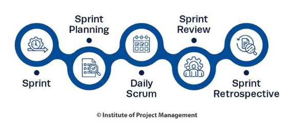
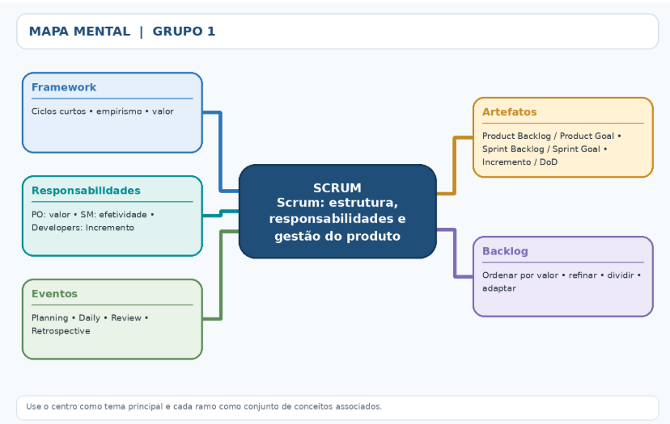

Módulo 1
Scrum
1. Introdução ao Scrum
Scrum é um framework leve para desenvolver, entregar e sustentar produtos em contextos complexos. Em vez de tentar prever tudo no início, a equipe trabalha em ciclos curtos, observa os resultados e ajusta as próximas decisões com base no que aprendeu.

Empirismo e pilares
O Scrum se apoia no empirismo: conhecimento construído a partir da experiência e decisões baseadas no que é observado. Seus três pilares são transparência (trabalho e situação compreensíveis), inspeção (examinar progresso e resultados com frequência) e adaptação (ajustar o plano ou a abordagem quando algo se desvia do esperado).
Valores do Scrum
Compromisso, foco, abertura, respeito e coragem orientam as decisões e relações da equipe. Os valores não são etapas do processo: ajudam a criar um ambiente em que problemas podem ser expostos, debatidos e resolvidos.
A Sprint e a Scrum Team
A Sprint é o ciclo de trabalho com duração fixa de um mês ou menos. Dentro dela, a equipe transforma trabalho selecionado em um Incremento que atenda à Definition of Done. A Scrum Team é pequena, multifuncional e autogerenciável; não possui subequipes ou hierarquias internas definidas pelo framework.
Como o conjunto funciona
O Product Owner ajuda a maximizar o valor do produto; os Developers planejam e executam o trabalho; o Scrum Master promove a correta compreensão e efetividade do Scrum. Os eventos oferecem oportunidades regulares de planejar, acompanhar, inspecionar o resultado e melhorar o modo de trabalhar.
O que não é Scrum
Scrum não é apenas uma reunião diária, um quadro de tarefas ou uma sequência rígida de etapas. É um framework com elementos interdependentes. Retirar eventos, artefatos ou compromissos pode reduzir a transparência e dificultar a inspeção e a adaptação.
2. Papéis do Scrum: responsabilidades (accountabilities)
O Scrum Guide atual descreve três responsabilidades dentro de uma única Scrum Team: Product Owner, Scrum Master e Developers. Elas não representam departamentos isolados nem cargos hierárquicos; são responsabilidades complementares para gerar valor.
Product Owner --- valor e prioridades
É responsável por maximizar o valor do produto resultante do trabalho da Scrum Team e pela gestão eficaz do Product Backlog. Isso inclui desenvolver e comunicar o Product Goal, criar e tornar os itens compreensíveis e ordenar o backlog. Pode delegar atividades, mas continua responsável pelos resultados.
Scrum Master --- efetividade do Scrum
É responsável por estabelecer o Scrum conforme definido no Guia e por melhorar a efetividade da equipe. Atua como líder servidor: ajuda a equipe a compreender o framework, facilita eventos quando necessário, apoia a remoção de impedimentos e auxilia a organização a criar condições para o trabalho ágil. Não é simplesmente um gerente que distribui tarefas.
Developers --- criar o Incremento
São as pessoas comprometidas em criar qualquer aspecto de um Incremento utilizável a cada Sprint. Definem o plano da Sprint (Sprint Backlog), incorporam qualidade por meio da Definition of Done, adaptam o plano diariamente em direção ao Sprint Goal e responsabilizam-se mutuamente como profissionais.
Responsabilidade compartilhada
A Scrum Team é responsável por todas as atividades relacionadas ao produto --- colaboração com stakeholders, verificação, manutenção, operação, experimentação e outras. A composição e as competências devem ser suficientes para criar valor sem depender de uma estrutura de subequipes.
Distinção importante
O Product Owner prioriza o valor e a direção do produto; os Developers decidem como organizar o trabalho para criar o Incremento; o Scrum Master trabalha para que Scrum e equipe sejam efetivos. Nenhuma dessas responsabilidades anula a colaboração entre as três.
3. Eventos do Scrum
Os eventos formais criam regularidade e reduzem a necessidade de reuniões improvisadas. Cada evento é uma oportunidade de inspecionar algo e adaptar o que vem a seguir. A Sprint contém os demais eventos.
Sprint
É o contêiner de todos os eventos e do trabalho necessário para atingir o Sprint Goal. Tem duração fixa de um mês ou menos; uma nova Sprint começa imediatamente após a anterior. Durante a Sprint, mudanças não devem colocar em risco o Sprint Goal, a qualidade não diminui e o Product Backlog é refinado conforme necessário.
Sprint Planning --- planejar
Inicia a Sprint e responde a três questões: por que esta Sprint é valiosa (Sprint Goal), o que pode ser feito (itens selecionados) e como o trabalho será realizado. O plano é criado colaborativamente pela Scrum Team, considerando o objetivo, o backlog e a capacidade disponível.
Daily Scrum --- acompanhar
Evento de 15 minutos para os Developers inspecionarem o progresso em direção ao Sprint Goal e adaptarem o Sprint Backlog. Não precisa ser um relatório ao Scrum Master ou uma rodada obrigatória de três perguntas; seu foco é produzir um plano de ação para o próximo dia de trabalho.
Sprint Review --- inspecionar o produto
A Scrum Team e os stakeholders relevantes examinam os resultados da Sprint, discutem mudanças no ambiente e colaboram sobre o que fazer a seguir. É uma sessão de trabalho sobre o produto, não apenas uma apresentação ou demonstração formal.
Sprint Retrospective --- melhorar o processo
A equipe examina como a Sprint ocorreu em relação a pessoas, interações, processos, ferramentas e Definition of Done. Identifica mudanças úteis para melhorar qualidade e efetividade; pode convertê-las em ações concretas para a próxima Sprint.
Distinção entre Review e Retrospective
Review olha principalmente para o produto, resultados e próximos passos com stakeholders. Retrospective olha para a forma de trabalhar e como a equipe pode melhorar. Ambas apoiam a adaptação, mas têm focos diferentes.
4. Artefatos do Scrum
Os artefatos representam trabalho ou valor e devem tornar informações importantes transparentes. Cada um possui um compromisso associado, que ajuda a equipe a manter foco e avaliar progresso.
Product Backlog --- Product Goal
É uma lista emergente e ordenada do que é necessário para melhorar o produto. Evolui conforme surgem novas necessidades e aprendizados. Seu compromisso é o Product Goal, que descreve um estado futuro do produto e dá direção de longo prazo à Scrum Team.
Sprint Backlog --- Sprint Goal
Reúne o Sprint Goal (por que a Sprint é valiosa), os itens do Product Backlog selecionados para a Sprint e o plano de entrega desses itens. É um plano feito pelos Developers para os Developers e muda conforme aprendem mais durante o trabalho. Seu compromisso é o Sprint Goal.
Incremento --- Definition of Done
É um passo concreto em direção ao Product Goal. Cada Incremento deve ser utilizável e integrar-se aos Incrementos anteriores, sendo verificado para não prejudicá-los. Só é considerado parte do Incremento quando atende à Definition of Done (Definição de Pronto/Concluído), uma descrição formal do estado de qualidade requerido.
Transparência e qualidade
Artefatos opacos levam a decisões ruins: um backlog sem ordem torna prioridades confusas; um Sprint Backlog desatualizado oculta o trabalho real; um Incremento que não atende à Definition of Done não pode ser apresentado como concluído. Transparência não significa excesso de documentação: significa informação suficiente e compartilhada.
Não confundir artefato e compromisso
O artefato mostra o trabalho ou valor; o compromisso fornece foco para avaliar o progresso. A associação oficial é: Product Backlog → Product Goal; Sprint Backlog → Sprint Goal; Incremento → Definition of Done.
5. Gestão do Product Backlog
A gestão do Product Backlog é um processo contínuo de compreender, ordenar e atualizar o trabalho potencialmente necessário para melhorar o produto. O backlog não é um contrato fechado nem uma lista definitiva de tudo o que será entregue.
Responsabilidade do Product Owner
O Product Owner responde pela gestão eficaz do backlog: comunicar o Product Goal, criar e comunicar itens, ordená-los e garantir que o backlog seja transparente e compreensível. Pode realizar o trabalho diretamente ou delegar partes dele, mas permanece responsável.
Ordenar não é apenas listar
A ordem deve refletir valor esperado, risco, dependências, urgência, custo de atraso e aprendizado. O item mais importante costuma ficar mais acima e precisa estar suficientemente claro para que a equipe o considere no planejamento. A ordenação pode mudar com novas evidências.
Refinamento do backlog
Refinamento consiste em decompor e definir melhor itens, esclarecer critérios, avaliar tamanho e dependências e remover ou reordenar itens que perderam relevância. É uma atividade contínua, colaborativa; não é um evento formal do Scrum nem exige que todos os itens futuros estejam detalhados por completo.
Tamanho e clareza dos itens
Itens próximos do trabalho tendem a precisar de mais detalhe e devem ser pequenos o bastante para serem compreendidos e concluídos dentro de uma Sprint. Itens mais distantes podem permanecer amplos. Histórias de usuário são uma forma comum de expressar necessidade, mas o Scrum não obriga um formato específico.
Exemplo aplicado
Em um aplicativo de compras, "permitir pagamento" é amplo. O refinamento pode separar cartão, Pix e tratamento de falhas; esclarecer critérios de aceitação; identificar dependências e ordenar primeiro a opção de maior valor ou risco. Após feedback do usuário, o Product Owner pode alterar a ordem ou adicionar novos itens.
Sinais de boa gestão
O backlog tem uma direção compreensível, itens prioritários claros, detalhe proporcional à proximidade da execução e espaço para mudanças. Não se deve confundir previsão com garantia: estar no backlog significa ser uma opção de trabalho, não uma promessa automática de entrega.
Mapa mental
